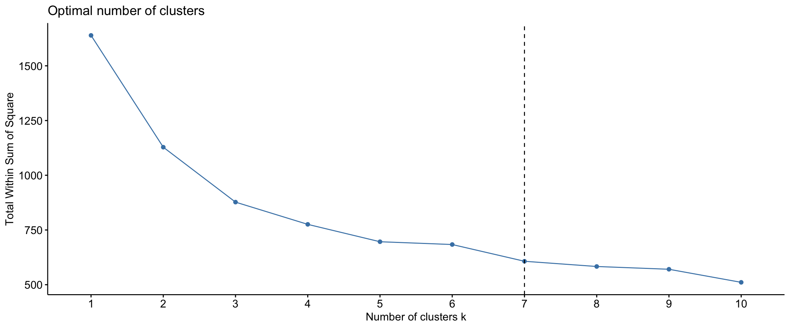
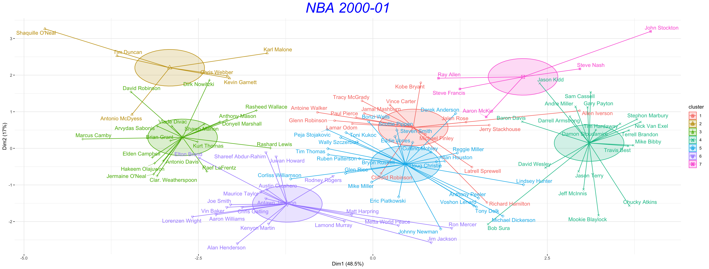
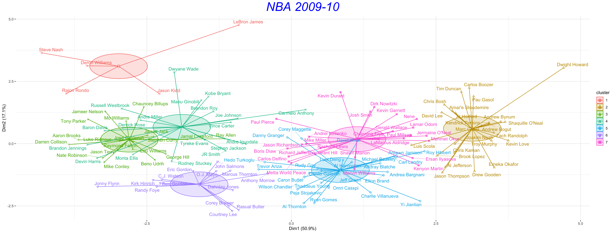
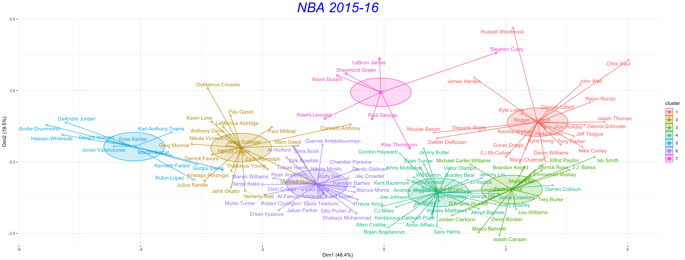
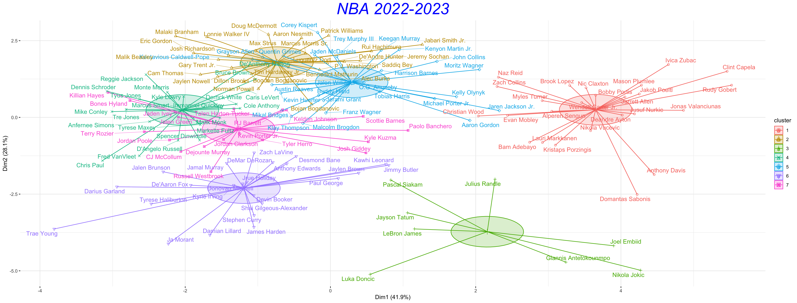
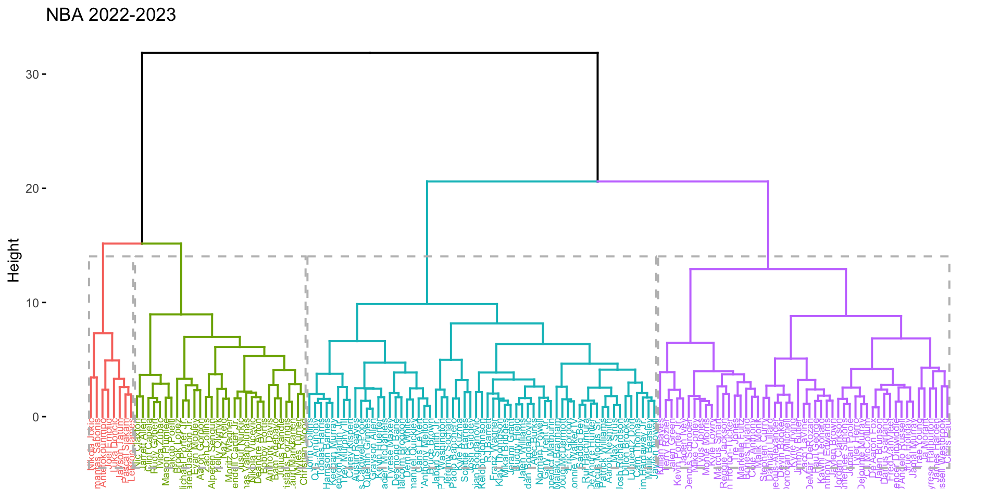
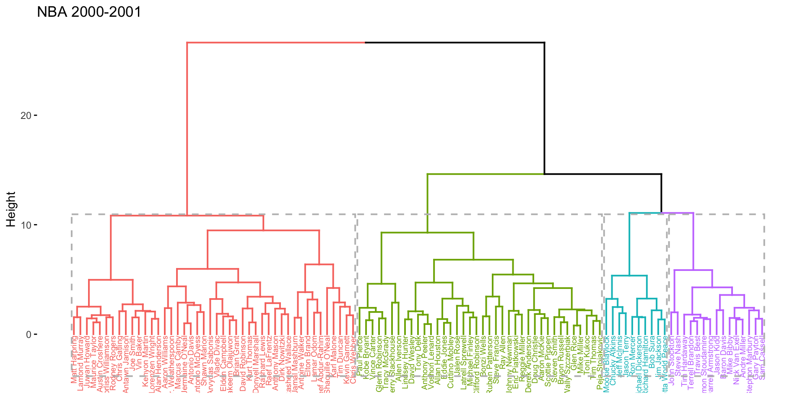
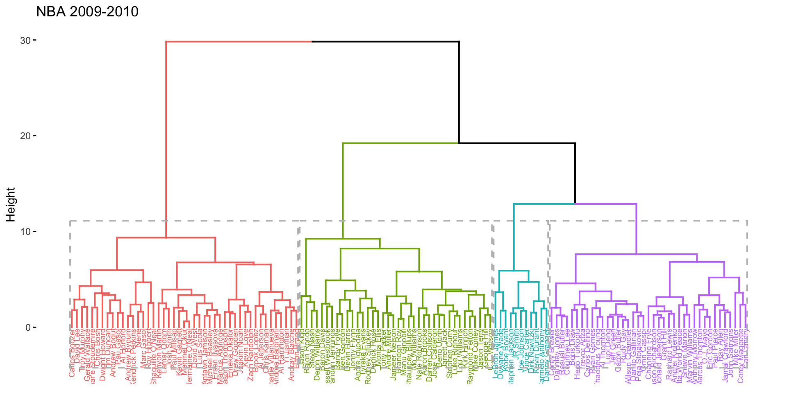
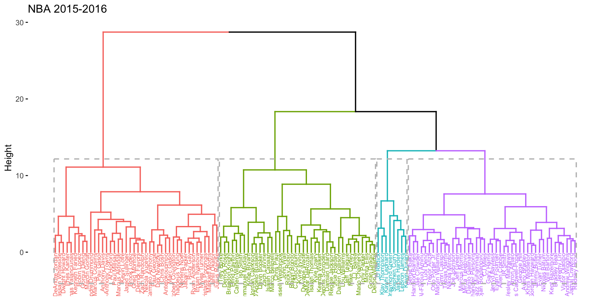

4 In-depth Analysis Between Weight and Height
p1 <- ggplot(nba, aes(x = player_weight,
y = player_height))
p1 <- p1 + geom_point()
p1 + geom_smooth()## `geom_smooth()` using method = 'gam' and formula = 'y ~ s(x, bs = "cs")'4.1 Time-series Visualization
p <- ggplot(cor_df, aes(x = season,
y = correlation,
group = 1)) + geom_line() +
xlab("Season") +
ylab("Correlation between Height and Weight") +
ggtitle("Correlation between Height and Weight over Seasons") +
theme_minimal()
print(p)
4.2 Clustering
4.2.1 k-means Clustering
nba_selected_season <- nba[(which(nba$season ==
"2022-23")), ]
nba_selected_season <- nba_selected_season[nba_selected_season$pts >
10, ]
nba_selected_season <- nba_selected_season[nba_selected_season$gp >
50, ]
rownames(nba_selected_season) <- nba_selected_season$player_name
selected_features <- c("player_height",
"pts", "player_weight",
"reb", "ast", "net_rating",
"oreb_pct", "dreb_pct",
"usg_pct", "ts_pct",
"ast_pct")
nba_for_clustering <- nba_selected_season %>%
select(all_of(selected_features))
df <- as.data.frame(scale(nba_for_clustering))
fviz_nbclust(df, kmeans,
method = "wss") +
geom_vline(xintercept = 7,
linetype = 2)
clustering_23 <- fviz_cluster(km_result,
data = df, ellipse.type = "euclid",
ellipse.level = 0.5,
ellipse.ratio = 0.8,
star.plot = TRUE,
repel = TRUE, main = "NBA 2022-2023",
ggtheme = theme_minimal())
clustering_23 <- clustering_23 +
theme(plot.title = element_text(size = 30,
face = "italic",
color = "blue",
hjust = 0.5,
vjust = 1, angle = 0,
lineheight = 1.2))For season 1999-00

| cluster | player_height | player_weight | pts | reb | ast |
|---|---|---|---|---|---|
| 1 | 198.9667 | 96.38830 | 12.92917 | 3.879167 | 2.558333 |
| 2 | 212.3017 | 119.63489 | 19.84167 | 10.483333 | 2.650000 |
| 3 | 207.4008 | 108.30381 | 13.78462 | 7.665385 | 1.826923 |
| 4 | 202.0455 | 104.65605 | 14.86364 | 5.009091 | 2.709091 |
| 5 | 201.9300 | 99.89104 | 19.59444 | 5.505556 | 3.811111 |
| 6 | 186.1820 | 83.95988 | 15.68500 | 3.680000 | 7.250000 |
| 7 | 197.8025 | 98.59956 | 15.82500 | 4.275000 | 2.475000 |
For season 2009-10

| cluster | player_height | player_weight | pts | reb | ast |
|---|---|---|---|---|---|
| 1 | 192.5320 | 92.16989 | 17.78000 | 4.920000 | 9.800000 |
| 2 | 210.0792 | 117.59373 | 16.15000 | 9.754167 | 1.991667 |
| 3 | 187.4253 | 84.94107 | 14.20526 | 2.705263 | 4.673684 |
| 4 | 195.1789 | 93.79805 | 19.55789 | 4.378947 | 5.252632 |
| 5 | 206.3262 | 106.50689 | 15.16923 | 5.715385 | 1.834615 |
| 6 | 193.9471 | 91.36639 | 13.10714 | 2.964286 | 2.650000 |
| 7 | 205.5446 | 107.67576 | 14.13462 | 6.519231 | 2.338462 |
For season 2015-16

| cluster | player_height | player_weight | pts | reb | ast |
|---|---|---|---|---|---|
| 1 | 189.7592 | 88.50714 | 17.87917 | 4.016667 | 6.491667 |
| 2 | 209.5500 | 114.50930 | 16.73000 | 8.585000 | 2.370000 |
| 3 | 191.5459 | 87.30312 | 13.50000 | 3.147059 | 3.817647 |
| 4 | 196.7593 | 94.16894 | 14.13929 | 3.557143 | 2.671429 |
| 5 | 211.0509 | 114.71754 | 13.36364 | 10.263636 | 1.145455 |
| 6 | 206.3262 | 104.76231 | 13.67692 | 5.723077 | 1.788461 |
| 7 | 201.0229 | 102.05820 | 23.42857 | 6.871429 | 4.957143 |
For season 2022-23

| cluster | player_height | player_weight | pts | reb | ast |
|---|---|---|---|---|---|
| 1 | 211.3280 | 113.25285 | 15.90000 | 9.196000 | 2.352000 |
| 2 | 197.4615 | 97.10229 | 13.09259 | 3.555556 | 1.855556 |
| 3 | 206.6925 | 112.09392 | 28.67500 | 9.662500 | 6.125000 |
| 4 | 189.2300 | 88.18241 | 13.73182 | 3.427273 | 5.009091 |
| 5 | 201.2462 | 98.91795 | 14.81154 | 4.538462 | 2.276923 |
| 6 | 193.2609 | 92.27639 | 24.90000 | 4.917391 | 6.239130 |
| 7 | 195.5800 | 92.41340 | 18.14737 | 4.826316 | 4.700000 |
4.2.2 Hierachical Clustering
result_23 <- dist(df,
method = "euclidean")
result_hc <- hclust(d = result_23,
method = "ward.D2")
fviz_dend(result_hc,
k = 4, cex = 0.5,
color_labels_by_k = TRUE,
main = "NBA 2022-2023",
rect = TRUE)
fviz_dend(result_hc_00,
k = 4, cex = 0.5,
color_labels_by_k = TRUE,
main = "NBA 1999-2000",
rect = TRUE)
fviz_dend(result_hc_10,
k = 4, cex = 0.5,
color_labels_by_k = TRUE,
main = "NBA 2009-2010",
rect = TRUE)
fviz_dend(result_hc_16,
k = 4, cex = 0.5,
color_labels_by_k = TRUE,
main = "NBA 2015-2016",
rect = TRUE)